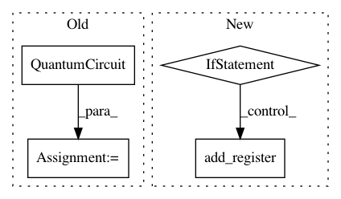

8e094feebf098642c9e03651d38618ed56829fe4,qiskit/aqua/utils/boolean_logic.py,BooleanLogicNormalForm,_set_up_circuit,#BooleanLogicNormalForm#Any#Any#Any#Any#Any#Any#,117
Before Change
if circuit is None:
if self._qr_ancilla:
circuit = QuantumCircuit(self._qr_variable, self._qr_clause, self._qr_ancilla, self._qr_outcome)
else:
circuit = QuantumCircuit(self._qr_variable, self._qr_clause, self._qr_outcome)
return circuit
After Change
circuit.add_register(self._qr_variable)
if self._qr_clause:
circuit.add_register(self._qr_clause)
if self._qr_outcome:
circuit.add_register(self._qr_outcome)
if self._qr_ancilla:
circuit.add_register(self._qr_ancilla)
return circuit
In pattern: SUPERPATTERN
Frequency: 3
Non-data size: 4
Instances
Project Name: Qiskit/qiskit-aqua
Commit Name: 8e094feebf098642c9e03651d38618ed56829fe4
Time: 2019-02-09
Author: shaohan.hu@ibm.com
File Name: qiskit/aqua/utils/boolean_logic.py
Class Name: BooleanLogicNormalForm
Method Name: _set_up_circuit
Project Name: Qiskit/qiskit-aqua
Commit Name: e4a392fa362e2decdbf9ce036cfc476b0ef85350
Time: 2019-08-11
Author: jul@zurich.ibm.com
File Name: qiskit/aqua/algorithms/single_sample/amplitude_estimation/ae_wo_qpe.py
Class Name: AmplitudeEstimationWithoutQPE
Method Name: construct_circuits
Project Name: Qiskit/qiskit-aqua
Commit Name: 7812ddea54b6ea28864e6c41d7d315e877f5783d
Time: 2019-08-08
Author: jul@zurich.ibm.com
File Name: qiskit/aqua/algorithms/single_sample/amplitude_estimation/ae_wo_qpe.py
Class Name: AmplitudeEstimationWithoutQPE
Method Name: construct_circuits